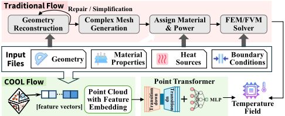
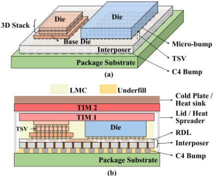
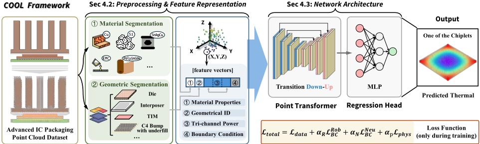
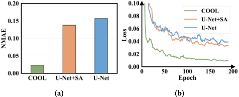
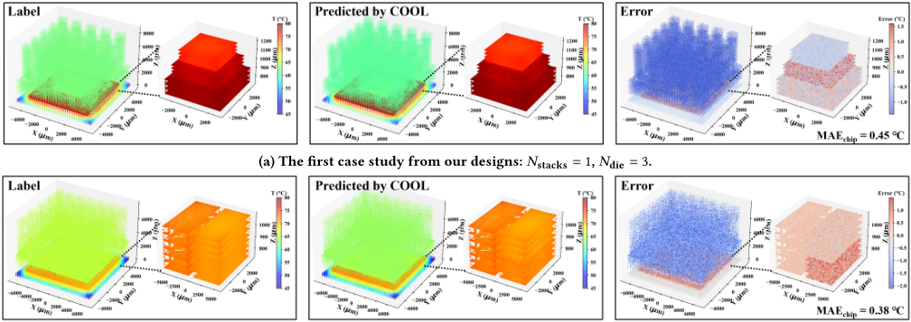

COOL：面向先进 3D/3.5D IC 封装热预测的冷却感知 Point Transformer 框架
先进 3D/3.5D 封装中多 die 垂直堆叠带来跨层热耦合，TIM、heat spreader 等冷却结构又随设计动态变化，传统 FEM 求解器（COMSOL、Cadence Celsius、ANSYS Icepak）单次仿真耗时长且需大量手动建模与 meshing，难以支撑迭代式设计探索。已有学习类热模型要么只建模单 die、无法捕捉层间热耦合，要么把冷却结构当作固定边界条件。COOL 将 die、interposer、TIM、heat spreader 等异构结构统一表示为携带材料、功耗与边界属性的 3D 点云，用层级 point transformer（含温度感知的 TA-FPS 采样）直接回归逐点稳态温度，并引入 PI-BC 损失约束 Robin/Neumann 边界与材料界面一致性。在自建 74 个设计、740 个热场景的基准上，COOL 达到 2.4% NMAE，显著优于 U-Net（15.6%）与 U-Net+SA（13.7%），相比商用 FEM 求解器取得超过 15.7× 加速（每设计 12 秒 vs 189 秒）。对团队而言，其点云+物理约束的快速代理建模思路可为 HBM4/UCIe 多 die 集成的热感知架构探索提供方法参考。
先进 3D/3.5D IC 封装中多 die 堆叠、材料异构且冷却结构（TIM、heat spreader、heat sink 等）随 co-design 动态变化，传统 FEM/FDM 求解器计算代价高、需手动几何建模与 meshing，无法用于迭代式设计空间探索；已有学习类热模型（DeepOHeat、ASRR-PINN、SAN-FNO 等）无法建模垂直堆叠 die 间的热耦合，且将冷却结构视为静态固定条件或硬编码层，难以泛化到结构多变的真实 3D/3.5D 封装场景。
将整个封装（芯片、interposer、TIM、heat spreader 等冷却组件）统一表示为带标注的 3D 点云，每个点携带：材料域 one-hot 编码与连续热属性（k_iso、Cp、ρ）的双域编码；三通道功耗特征（Raw Power、Binary Flag、Log-Transformed Power）；几何域 one-hot 与 Robin/Neumann 边界指示。网络为层级 point transformer 编码器-解码器（Transition Down/Up、k-NN 邻域分组、注意力机制），并提出 TA-FPS（以温度梯度、功率密度、边界指标合成的热重要性分数偏置 farthest point sampling）。训练目标包含数据 MSE 项、基于 Laplacian 的同材料平滑正则项，以及施加于 Robin/Neumann 边界点的 PI-BC 损失。几何预处理上，C4 bump 近似为等效导热的立方体基元，密集 TSV 阵列按密度做面积归一化的各向异性等效导热均匀化。
在自建 74 个 3D/3.5D 封装设计（每设计 10 个 power map 变体，共 740 个热场景；58 设计/580 样本训练，16 设计/160 样本测试）基准上，COOL 达到约 2.4% NMAE
基线对比：U-Net 为 15.6%，U-Net+SA 为 13.7%，COOL 在 epoch 200 时显著优于两者
相比商用 FEM 求解器（每设计约 189 秒，不含手动干预），COOL 每设计 12 秒完成预测且无需手动干预，加速比超过 15.7×
两个案例研究中，active chip 区域 MAE 分别约 0.45°C（3D 堆叠）与 0.38°C（3.5D）
训练使用 8 张 NVIDIA RTX 4090、batch size 16、200 epochs，约 35.6 小时；损失在约 epoch 160 接近收敛，快于两个基线
单设计约 3×10^5 个点（重采样至 300,000 点），26 维原始特征经嵌入层映射为 64 维；编码器 300K→150K→75K→37.5K，通道 64→128→256→512
据论文所述是首个 cooling-aware 的数据驱动热预测框架：将芯片、封装与冷却组件统一编码为点云，把冷却结构作为可变设计元素而非固定边界条件，从而泛化到 TIM 厚度、堆叠几何可调的 co-design 场景；相比 DeepOHeat/ASRR-PINN 只建模单 die 或固定截面功率、SAN-FNO 将冷却层硬编码为固定材料层，COOL 通过点云表示、TA-FPS 热感知采样与 PI-BC 边界损失，显式建模层间热传导、横向热扩散与设计相关的散热路径。
相关度级别：medium
命中能力域：2.1 IP 架构与微架构 | 2.3 时序与物理实现
理由：团队产品线中 HBM4（3D 堆叠）与 UCIe（chiplet 互连）属于多 die 集成场景，跨层热耦合是架构权衡的现实约束；COOL 提供秒级封装级稳态热预测，可支撑 2.1 中 chiplet/多 die 集成架构的热感知探索（堆叠配置、die/interposer 尺寸、TIM/散热结构参数扫描）。方法学上，其'点云+物理约束损失的快速代理模型'与 2.3 中 ML 辅助物理分析（时序/功耗预测）同族，但预测对象是封装级温度场而非时序/功耗，属于邻近借鉴。论文完全不涉及 RTL 设计、验证方法学或时序 sign-off，也不提供 IP 级分析能力，且封装热分析通常由集成方/封装团队主导，因此评级为 medium 而非 high。
建议动作：作为方法参考存档
arXiv:2608.15890v1 [cs.CE] 2026年8月16日
Yao Lu, Zhicheng Guo, Qijun Zhang, Shang Liu, Wenji Fang, Wenkai Li, Zhiyao Xie
∗ 香港科技大学
Email: eezhiyao@ust.hk
（∗ 通讯作者）

在实际的3D/3.5D封装中，多个有源芯片垂直堆叠，并通过热界面材料（TIMs）、硅通孔（TSVs）和微凸点（micro-bumps）等芯片间界面[9, 15]实现热耦合。与此同时，芯粒（chiplets）在厚度和材料成分上往往各不相同，导致异质且高度各向异性的热传导路径。这些跨层相互作用与几何变化共同决定了封装内部的温度场，使得精确建模远比单芯片系统复杂[4, 6, 12]。近年来基于学习的热模型[2, 3, 7, 8, 14, 17, 19]相比传统有限元方法（FEM）求解器已取得了可观的加速效果。然而，这些模型不足以捕捉先进封装中复杂的热动力学行为。这些方法在建模芯片间热耦合以及适应依赖于设计的散热路径方面存在严重局限，限制了其在真实3D/3.5D IC场景中的适用性，具体如下。
首先，现有模型无法捕捉跨多个堆叠层的芯片间热耦合。例如，DeepOheat [8]和DeepOheat-v1 [17]仅在单个有源芯片范围内从2D或三维体积功率图学习温度分布，其公式化建模并未考虑垂直堆叠芯粒之间的热传播。类似地，ASRR-PINN [19]假设某一横截面上的功率图均匀分布，且功率不随层变化，过度简化地将系统视为单芯片结构。这类简化无法捕捉主导真实3D IC热行为的垂直传导与横向扩散效应。
其次，当前的学习框架将散热结构视为静态的固定条件，而非具有变化的灵活设计元素。DeepOHeat系列模型[8, 17]和ASRR-PINN [19]均假设边界条件固定，忽略了热扩展器（heat spreaders）或TIMs等散热结构的影响。SAU-FNO [7]
先进3D与3.5D集成电路（IC）封装显著提升了集成密度，但跨层热耦合与复杂的散热结构也加剧了热管理挑战。传统求解器具有高保真度，但对于迭代设计流程而言速度过慢；而现有的基于学习的方法要么无法捕获裸片间热耦合，要么将散热结构视为静态组件，限制了其在真实封装协同设计场景中的适用性。在本工作中，我们提出了COOL——一个散热感知的Point Transformer框架，它将异构组件（裸片、中介层、热界面材料（TIM）、热扩展器）表示为嵌入几何、材料与功率属性的带标注三维点云。COOL显式编码几何边界与散热结构，并引入物理信息边界条件（PIBC）损失，以在材料界面和散热边界处强制热一致性。大量实验表明，COOL在我们构建的多封装热设计基准上取得了出色的2.4%归一化平均绝对误差（NMAE），大幅优于现有基于学习的方法，同时相比商用有限元（FEM）求解器提供了超过15.7倍的加速。
Yao Lu、Zhicheng Guo、Qijun Zhang、Shang Liu、Wenji Fang、Wenkai Li、Zhiyao Xie ∗，香港科技大学，Email: eezhiyao@ust.hk，（∗ 通讯作者）。2026。COOL：一种面向先进3D/3.5D IC封装热预测的散热感知点Transformer框架。载于第63届ACM/IEEE设计自动化会议（DAC '26），2026年7月26-29日，美国加利福尼亚州长滩。ACM，美国纽约州纽约，7页。https://doi.org/10.1145/3770743.3804229
先进的3D和3.5D IC封装技术实现了高集成密度与高性能，但同时也带来了严重的热耦合和非均匀散热挑战。精确的热分析对于确保性能和可靠性至关重要。然而，传统的有限元方法（finite-element method, FEM）或有限差分方法（finite-difference method, FDM）求解器（如COMSOL、Cadence Celsius和ANSYS Icepak）计算开销高昂，模拟单个功耗轨迹往往需要数小时。此外，这些求解器在几何建模和网格划分方面需要大量人工投入。这使得它们难以实际应用于迭代式设计空间探索或自动化布局优化。
请使用 nonacm 选项或 ACM Engage 文档类以启用 CC 许可协议
本作品采用知识共享署名 4.0 国际许可协议（Creative Commons Attribution 4.0 International License）进行许可。
DAC '26，2026年7月26-29日，美国加利福尼亚州长滩
© 2026 版权归所有者/作者所有。
ACM ISBN 979-8-4007-2254-7/2026/07
通过显式建模边界约束并纳入散热器或热界面材料（TIM）等散热相关层，取得了进展。然而，其公式化表述将这些组件视为预先定义的、硬编码的层，具有固定的材料属性和厚度。这种僵化的建模无法捕捉先进封装中普遍存在的设计相关变化；在先进封装中，TIM厚度和芯粒堆叠几何结构都可能在协同设计过程中被动态调整。因此，现有方法无法在具有异构结构可变性的各种封装配置之间进行泛化。
为了克服这些挑战，需要一种更灵活的几何表示来建模3D/3.5D封装的复杂异构结构，同时还需要一个能够从这种新数据格式中快速捕获信息的相应模型。
在本工作中，我们提出了COOL，即首个散热感知的数据驱动框架，如图1所示，它联合学习跨芯片、封装和散热组件的热传递。我们提出了两项关键技术：数据格式和点Transformer模型。❶ COOL采用点云来表示异构的先进封装结构，点云能够在任意分辨率下自然地编码空间与材料的异构性。每个点可以表示一个物理位置，并附带材料类型、功耗分布或边界条件等属性，从而能够对不规则几何形状和裸片界面上的热行为进行建模。❷ COOL在这一点云表述之上应用基于Transformer的注意力机制，以此作为我们热学习框架的基础。为了纳入更多物理信息，我们将COOL定制为能够感知边界条件。我们采用基于点的神经算子[16, 18]，其在直接从点集学习空间连续物理场方面展现出强大的能力，同时实现了几何灵活性与数据效率。
总而言之，通过将三维热域表示为点云并应用基于Transformer的注意力机制，COOL能够高效地捕捉复杂的几何与材料交互作用。这种统一的建模方式使得温度预测在多样化的三维封装配置下均能高效且具备良好的泛化能力。我们的主要贡献总结如下：

(b)
在本节中，我们回顾先进集成电路（IC）封装以及基于学习的热预测的相关背景。我们首先讨论2.5D、3D和3.5D堆叠中的建模挑战，然后总结在热模型中纳入边界条件的已有方法。
2.5D和3D集成等先进封装技术已成为在传统单片片上系统（SoC）极限之外延续系统规模扩展的关键使能技术。特别是，3.5D集成结合了基于中介层的2.5D架构与3D堆叠架构两者的优势，能够在硅中介层上实现多个高性能芯粒的异构集成，并通过垂直互连实现高带宽与低延迟。
由于COOL明确针对这些实际的3D/3.5D配置而设计，因此有必要对此类封装所固有的几何与材料复杂性进行建模。图2展示了一个代表性的3.5D结构，其中芯粒通过微凸点键合到硅中介层上，其热传导路径涉及硅、底部填充胶、芯片粘接材料、热界面材料（TIMs）和热扩展器等多种材料。准确刻画这些结构需要精细的3D表示，然而对C4凸点和硅通孔（TSV）阵列等细间距对象进行网格划分在计算上代价极高、难以承受。
为了构建用于学习的可靠热模型，我们采用了具有物理意义的几何抽象方法，在保持仿真友好性的同时保留热行为。C4凸点被近似为具有等效热导率的规则化立方体基元，从而在无需过高网格划分开销的情况下确保一致的热流表示。类似地，密集的TSV阵列通过面积归一化的材料均匀化方法处理：无需对数千个单独的TSV进行网格划分，而是基于每个芯粒区域内的TSV密度计算有效各向异性热导率。这些技术使我们能够以高保真度仿真真实的3.5D结构并生成温度场。
2

基于学习的热预测已成为加速复杂集成电路（IC）堆叠热分析的一种颇具前景的方法。其核心挑战在于如何准确纳入边界条件（如 Robin、Neumann 条件）和材料过渡，这些因素对 3D/3.5D 封装中的热扩散有强烈影响。
先前的研究 [5, 7, 13, 14, 19] 探索了将边界信息嵌入神经模型的多种机制。例如，NeuralMesh [5] 通过将 3D 结构分解为材料过渡层，并附加编码材料属性、热源和边界属性的逐平面张量来丰富网络输入。ASRR-PINN [19] 通过专用的边界条件化模块强制以解析方式满足 3D 热约束。尽管有这些工作，由于复杂的材料界面和散热路径，在高度异构的 IC 堆叠中强制施加边界物理仍然具有挑战性。
这些局限性促使我们设计了 COOL。我们采用一种层次化的基于点的 Transformer 架构，直接处理先进封装的 3D 点云，从而避免网格量化误差。为确保物理正确性，COOL 集成了一种可扩展的物理信息边界条件（PI-BC）方案，将 Robin 和 Neumann 交互直接纳入训练目标。这种组合产生了一个适用于真实 3D/3.5D IC 热预测的散热感知框架。
每个 3D/3.5D IC 设计被表示为一个点集，任务是学习一个输出稳态温度的映射。
其中 𝑁 是设计中点的数量，ˆ 𝑇 𝑖 是点 𝑖 的温度，x 𝑖 ∈ 𝑅 3 为坐标，f 𝑖 包含材料域特征、工程化功耗描述符以及几何/边界指示量，如第 4.2 节所述。
这定义了 COOL 所解决的基于点的热预测问题：直接从统一的点云嵌入中预测物理一致的温度场。
本节介绍所提出的 COOL 框架的架构与设计，如图 3 所示。由于我们是首个利用点云对先进 IC 封装的热预测问题进行形式化建模的工作，我们开发了专门的数据预处理（见第 4.2 节）以及相应的 point transformer 骨干网络（见第 4.3 节），以统一芯片与散热结构。
所提出的 COOL 是一个用于异构 3D/3.5D IC 封装稳态温度预测的 point transformer 框架。与将体积几何离散化到固定网格上的传统有限元方法（FEM）求解器不同，COOL 直接在点级表示上进行操作，同时保持了空间保真度与可扩展性。
该框架的设计目标是：(1) 高效扩展至包含数十万个空间点的设计；(2) 显式编码异构材料域与散热结构；(3) 通过精心设计的表示来增强边界感知热分布的可学习性。
COOL 框架首先将每个 3D/3.5D IC 设计转换为统一的基于点的热表示。平均而言，单个设计包含约 3 × 10 5 个点，这些点捕获了跨多个堆叠裸片、互连层和封装材料的细粒度结构与材料变化。这种精细分辨率的表示使 COOL 能够以高保真度对跨裸片热耦合和热扩散路径进行建模。
坐标 ( 𝑋,𝑌,𝑍 ) 被归一化到区间 [ 0 , 1 ] 3 。每个点包含固有特征，例如固有的热相关属性、几何边界以及功耗值。
4.2.1 材料域特征。先进封装中的热传导由高度异构材料之间的相互作用所主导，例如硅、铜、底填胶（underfill）和聚合物。然而，这些材料在热导率（ 𝑘 𝑖𝑠𝑜 ）、比热容（ 𝐶 𝑝 ）和密度（ 𝜌 ）方面往往表现出相互重叠的物理取值范围，这使得纯连续表示难以明确地区分各个域。
为解决这一问题，COOL 采用了一种双域编码方案。每个材料域首先被分配一个类别标识符，该标识符经过独热编码（one-hot encoding）后与其连续属性 { 𝐶 𝑝 , 𝜌, 𝑘 𝑖𝑠𝑜 } 拼接。随后，组合向量被投影到材料嵌入空间，使模型能够同时学习域特定的传导模式和跨材料过渡行为。这有助于 COOL 捕获不同材料之间的热传递。
然而，许多先前的工作 [5, 19] 在其学习模型中未能捕获此类特定的材料信息。
4.2.2 综合功耗特征。功耗（ 𝑞 ）作为热源，在真实 3D IC 系统中极为稀疏，并表现出强烈的空间偏斜性。为了捕获这种分布复杂性，COOL 采用了一种工程化设计的三通道功耗表示：1) 原始功耗：保留耗散的绝对幅值，保持与热强度的直接对应关系。2) 二值标志：指示有源区域与无源区域。它有助于引导模型将注意力集中在产热位置上。3) 对数变换功耗：对长尾功耗分布进行转换。它有助于在训练期间稳定梯度流。
这些综合表示使 COOL 能够针对不同的源区域进行专门化处理，增强了模型对局部热密度和空间一致性的感知。
4.2.3 几何与边界特征。准确的稳态热预测在很大程度上取决于模型对几何复杂性与边界驱动传热行为的捕捉能力。为此，COOL 为每个点附加了一组几何感知编码。首先，对不同的几何域进行独热（one-hot）编码。随后，为坐标位于热交换表面上的点分配边界类型指示符，包括 (1) 对流边界标志（𝑏 conv 𝑖）和 (2) 绝热边界标志（𝑏 neu 𝑖）。这些特征帮助网络定位支配热量进入或离开系统的边界条件。
总体而言，这些编码策略为 3D/3.5D IC 提供了统一且物理感知的点表示。通过将材料属性、功耗描述符以及几何-边界线索嵌入到每个点中，COOL 为下游 transformer 提供了所需的基本物理上下文。
COOL 采用分层的基于点的 transformer 架构。我们通过热感知采样和物理信息约束对其加以扩展，以更好地捕捉 3D/3.5D IC 中至关重要的热行为、跨材料传导以及边界驱动的热交换。该网络遵循几何深度学习中常用的编码器-解码器范式 [1]。
4.3.1 带 Transition Down 的编码器。编码器通过若干 transition down（TD）层和 point transformer 模块逐步降低点分辨率，同时提升特征容量，使网络能够对局部传导模式和全局热扩散结构进行联合推理。
➀ Transition Down。每个 TD 阶段由采样、邻域分组、特征聚合组成。
采样。标准的最远点采样（FPS）仅依赖几何信息，可能忽略热点和界面等在热学上重要的区域。COOL 引入了温度感知最远点采样（TA-FPS），其利用一个反映局部热活动与材料转变的重要性分数对 FPS 进行偏置。为量化重要性，TA-FPS 计算复合分数 𝑠 𝑖 ∈ [ 0 , 1 ] ：
ˆ 𝑔 𝑖 、ˆ 𝑞 𝑖 和 ˆ 𝑏 𝑖 分别为归一化温度梯度幅值、归一化功率密度和边界指示符。经典 FPS 距离度量 𝐷 𝑖 被偏置为 𝐷 ′ 𝑖 = ( 1 + 𝛾𝑠 𝑖 ) 𝐷 𝑖 。
这种采样策略确保影响热流的区域在更粗分辨率下得以保留，从而提升跨尺度热推理的保真度。
邻域分组。对于每个采样点，使用 𝑘 近邻（𝑘-NN）[11] 构建局部邻域。将相对坐标与局部特征差拼接起来，为聚合提供空间与热学上下文。
➁ Point Transformer 模块。每个 TD 阶段包含一个 point transformer 模块，该模块利用注意力机制细化局部表示。给定某点的潜在向量及其周围邻居，该模块基于学习到的位置编码和特征亲和度计算注意力权重。这使网络能够自适应地优先考虑影响热传递的邻居。
4.3.2 带 Transition Up 的解码器。解码器与编码器呈镜像对称，逐步将预测恢复至全分辨率。
Transition Up（TU）。每个 TU 阶段将特征从较低分辨率的点集上采样到较高分辨率的点集。
插值。特征通过在较小的 𝑘-NN 邻域上进行距离加权插值来传播，确保跨材料与界面的平滑重建。
跳跃连接。将编码器特征与解码器特征对齐并拼接，以恢复下采样过程中丢失的细粒度结构。
4.3.3 全局结构与回归头。在整个层级结构中，特征维度从输入嵌入处的 𝑑 = 128 逐层扩展到更深层中逐步更高的容量。在解码器末端，一个两层的多层感知机（MLP）将点特征映射为标量温度预测。
4.3.4 物理信息边界条件化。封装 IC 中的热行为受边界交互的强烈影响，包括通过散热器的热扩展、暴露表面处的对流，以及跨材料界面的热流连续性。
为了捕捉这些效应，COOL 引入了物理信息边界条件化（PI-BC），它与数据监督损失联合工作。总损失定义为
其中 𝛼 R、𝛼 N 和 𝛼 p 为系数。
数据项：𝐿 data 是 𝑁 个点上预测温度 ˆ 𝑇 与真实温度 𝑇 之间的均方误差。
物理项：均匀材料域内的温度除热源附近外应在空间上保持平滑。为抑制非物理的跳变，我们引入 𝐿 phys，这是一种基于拉普拉斯算子的正则化，用于惩罚每个点与其同材料邻居加权平均之间的偏差。
边界条件项：边界损失项 𝐿 𝑅𝑜𝑏 BC 和 𝐿 𝑁𝑒𝑢 BC 的构造方式与数据项类似，但分别选择性地应用于属于 Robin 边界和 Neumann 边界的点 [10]。对于每种边界类型，我们计算预测温度与真实温度之间的均方误差。
4
5.1.1 数据集构建。我们首先生成了一个多样化的数据集，包含 74 个异构的 3D 和 3.5D IC 封装设计。这些设计通过系统地改变表 1 中列出的关键结构参数来构建。该参数集涵盖先进封装的多个方面，包括：(1) 决定热扩散距离的芯片与基板几何形状（例如横向尺寸 𝐿 𝑥,𝑦 、裸片与中介层尺寸）；(2) 垂直堆叠配置，例如裸片数量 𝑁 die 和堆叠数量 𝑁 stacks，同时涵盖单片裸片与多裸片 3D 堆叠；(3) 与互连相关的热路径，包括硅通孔（TSV）密度 𝑓 TSV 和 C4 凸点参数，它们影响垂直热传导；以及 (4) 直接影响散热效率的冷却结构参数，例如热界面材料（TIM）、封装盖和散热器的厚度（𝐿 TIM 𝑧 、𝐿 lid 𝑧 、𝐿 hs 𝑧 ）。在表 1 所列范围内对每个变量进行采样，所得到的设计实例共同涵盖了各种 3D/3.5D 设计。
对于生成的 74 个设计中的每一个，我们额外创建了 10 个功耗图变体，从而总共得到 740 个仿真的热场景。随后在真实的边界和冷却条件下，使用有限元（FEM）求解器计算稳态温度场。得到的温度分布被采样为 3D 点云，构成用于训练和评估 COOL 的数据集。
为避免几何信息泄露，数据集划分在设计层面进行。我们随机选择 80% 的设计用于训练，20% 用于测试。根据设计的不同结构，共有 58 个设计，生成 580 个训练样本。其余 16 个设计（含 160 个样本）用于测试。
5.1.2 预处理。为实现批量训练并确保架构一致性，原始点云使用最远点采样（FPS）重采样为固定大小 300,000 个点。对于每个点，我们构建第 4.2 节中定义的特征向量。
该过程包括：(1) 归一化的 3D 坐标（3 维）；(2) 材料域描述符，由 7 维 one-hot 材料 ID 和 3 个物理属性（𝑘 𝑖𝑠𝑜 、𝐶 𝑝 、𝜌 ）组成；(3) 11 维几何 one-hot 编码、2 维边界指示符，以及与功耗相关的特征。
将所有组件拼接后得到一个 26 维的原始特征向量。在进入网络之前，该向量通过特征嵌入层被映射为一个 64 维向量。
5.1.3 模型设置。COOL 采用第 4.3 节中的分层编码器-解码器架构，输入为固定分辨率的点集。编码器执行三个 Transition Down 阶段，将点集从 300K → 150K → 75K → 37.5K 逐步缩减，同时将特征通道扩展为 64 → 128 → 256 → 512。每个阶段包括 TA-FPS 采样和一个 point transformer 模块。解码器以对称的 Transition Up 阶段镜像这一层级结构，采用基于插值的特征传播和跳跃连接。
一个轻量级的多层感知器（MLP）头（64 → 64 → 1）为所有点生成归一化的温度预测。
5.1.4 训练与测试。训练使用 AdamW 优化器，初始学习率为 1 × 10 - 3，权重衰减为 1 × 10 - 4。首先进行十个 epoch 的线性预热，随后采用余弦退火。在八块 NVIDIA RTX 4090 GPU 上进行分布式数据并行训练，支持 batch size = 16。完整的训练计划共运行 200 个 epoch，大约需要 35.6 小时的实际运行时间。在测试阶段，推理在单块 RTX 4090 GPU 上执行。预测得到的归一化温度经过逆变换，以获得物理温度场。
| Variable | Description | Range [Unit] |
|---|---|---|
| 𝐿 𝑥,𝑦 𝐿 𝑧 | Substrate lateral size (x-y) Substrate thickness | 8-16 [mm] 400 [µm] |
| 𝐿 Si 𝑥 𝐿 C4 𝑓 TSV | Interposer lateral size C4 bump height TSV density in interposer | 6-14 [mm] 80-120 [µm] 5-30% of Si area |
| 𝑁 stacks 𝑁 die 𝐿 ( 𝑠𝑡𝑎𝑐𝑘 ) 𝑥,𝑦 𝐿 ( 𝑠𝑡𝑎𝑐𝑘 ) 𝑧 𝐿 ( 𝑚𝑜𝑛𝑜 ) 𝑥,𝑦 𝐿 ( 𝑚𝑜𝑛𝑜 ) 𝑧 | Number of stacks Number of stacked dies 3D-stacked IC lateral size 3D-stacked IC thickness Monolithic die lateral size Monolithic die thickness | 1,2,3 2,3,4 4-7 [mm] 100-250 [µm] 6-10 [mm] 300-800 [µm] |
| 𝐿 TIM 𝑧 𝐿 lid 𝑧 𝐿 hs 𝑧 | TIM thickness Lid thickness Heat sink thickness | 100-220 [µm] 500-800 [µm] 600-1800 [µm] |
| Variable | Description | Range [Unit] |
5.1.5 误差度量。我们使用平均绝对误差（MAE）及其范围归一化的对应指标——归一化平均绝对误差（NMAE）来评估预测精度。MAE 衡量预测温度与真实温度之间的平均绝对差值，而 NMAE 则提供一种与尺度无关的误差，以温度范围的百分比表示。它们的定义如下
其中 ˆ 𝑇 𝑖 和 𝑇 𝑖 分别为点 𝑖 处的预测温度与标签温度，𝑁 为采样点的数量，𝑇 max 和 𝑇 min 表示该设计的最高温度与最低温度。

5

(b) 来自我们设计的第二个案例研究：𝑁 stacks = 2，𝑁 die = 2。
我们使用商用有限元方法（FEM）工具生成温度场作为真值。由于 SAN-FNO [7] 最初是为基于网格的输入设计的，无法直接处理点云数据，我们构建了可与之比较的基于点的基线模型进行对比。具体而言，我们遵循类似的设计原则实现了一个朴素 U-Net 和一个增强型 U-Net+SA（带自注意力的 U-Net）。这两个模型作为 SAN-FNO [7] 的基于点的对应模型，从而能够与我们所提出的 COOL 框架进行公平评估。
为了验证 COOL 的有效性，我们在第 5.1 节所述的实验设置下，对异构集成电路（IC）设计进行了实验。目的在于评估 COOL 的预测精度与计算效率。
图 4 展示了 COOL 与基线方法在训练和测试阶段的总体对比。从图中可以明显看出，COOL 在整个过程中始终表现出更低的损失轨迹，表明其学习行为更加稳定。
图 4a 报告了 epoch = 200 时在归一化平均绝对误差（NMAE）指标上的测试结果。COOL 始终优于各基线方法，取得了约 2.4% 的 NMAE，而 U-Net 和 U-Net+SA 分别为 15.6% 和 13.7%。这一显著差距凸显了 COOL 卓越的预测能力，并证实其能够从点云输入数据中准确捕捉潜在的热学模式。重要的是，这一性能差距表明，传统的基于点和基于 U-Net 的方法难以在异构 IC 设计的全部空间变异性上进行泛化，而 COOL 则能够有效建模这些复杂性。
图 4b 展示了 COOL 与基于点的基线方法 U-Net 和 U-Net+SA 在前 200 个 epoch 内的训练动态。COOL 的损失迅速下降，并在约第 160 个 epoch 附近趋于收敛，而 U-Net 和 U-Net+SA 仍在明显持续下降，表明其收敛较慢。COOL 的快速收敛不仅减少了所需的训练时间，还表明其优化稳定性有所提升，从而有望在不同 IC 设计上获得更稳健的性能。
图 5 可视化了 COOL 在两种异构 IC 设计上的预测性能。图中既包含全芯片温度预测结果，也包含主要热源（芯片区域）上的详细温度分布。图 5a 对应于完全三维堆叠的 IC，而图 5b 展示了带有独立芯片模块的 3.5D 配置。COOL 在两种场景下都能准确捕捉空间热梯度与温度模式，在有源芯片区域达到了尤其高的保真度，3D 和 3.5D 设计的平均绝对误差（MAE）分别约为 0.45°C 和 0.38°C。
这些可视化结果进一步证实，COOL 不仅实现了较低的全局误差，还能在关键区域提供精确的温度估计，进一步印证了其在异构 IC 上的有效性。
我们还对运行时间进行了粗略估计。以商用 FEM 求解器作为参考，预测每个设计通常需要 189 秒，且不包括网格细化或参数调整等人工干预。COOL 无需任何人工干预，每个设计仅需 12 秒即可完成预测，实现了超过 15.7× 的加速。快速收敛、高预测精度与低计算成本相结合，表明 COOL 为异构集成电路中的实时热分析与设计验证提供了一种实用的解决方案。
在本工作中，我们提出了 COOL，一种面向先进 3D/3.5D 集成电路封装热预测的冷却感知点云 Transformer。通过将热域表示为带标注的点云，COOL 将冷却结构显式建模为动态设计元素。所提出的 PI-BC 方案在材料界面和冷却边界处强制保证物理一致性。大量实验表明，COOL 实现了 2.4% 的 NMAE，显著优于基于点的基线方法，同时相比 FEM 求解器提供了 15.7× 的加速。这些结果证实了 COOL 在下一代集成电路封装热感知协同设计中的实用性。
2 条证据未在原文中核对到